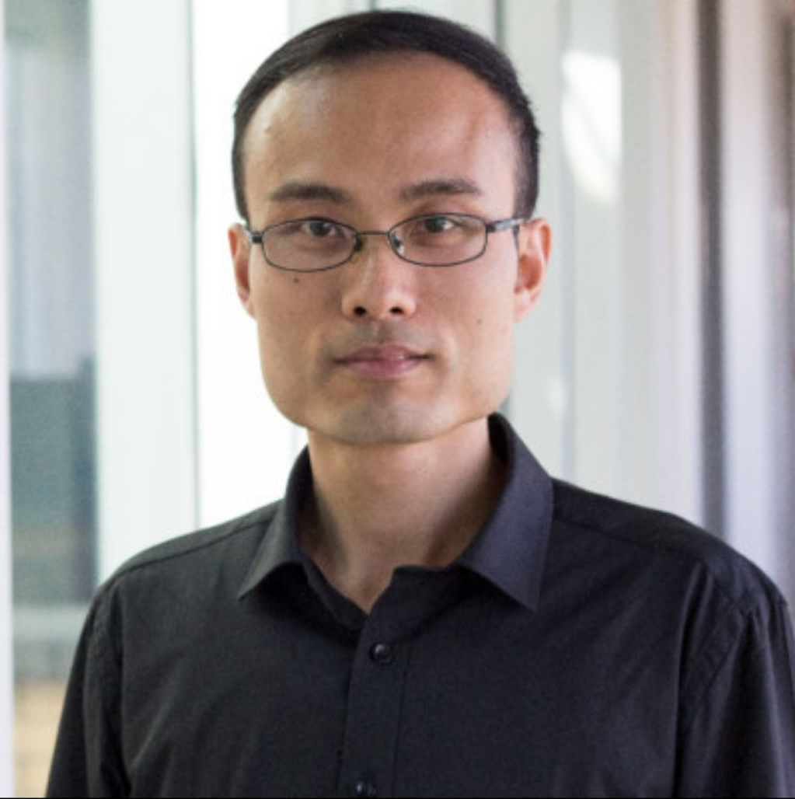

Dr. Chen Feng, Chief Scientist at EternaX: SILMARILS, Post-Quantum Cryptography, and the Scientific Foundation of EternaX
At EternaX, we are building post-quantum market infrastructure for institutional finance. That work rests on a scientific foundation. Today, we are introducing the scientist behind it, and the post-quantum signature scheme that carries his name in the acknowledgements.

At EternaX, we believe post-quantum market infrastructure must be built on science that is real, peer-reviewed, and durable. When we set out to design a post-quantum signature scheme capable of preserving institutional execution quality, a scheme we named SILMARILS, we knew the research had to be led by someone whose work in quantum computing, post-quantum cryptography, and information theory was already recognised at the highest level. That scientist is Dr. Chen Feng, our Chief Scientist. He joins our co-founders Paarrthhh Birla and Dariia Porechna as the third signatory on every piece of EternaX institutional research, including our April 2026 Cryptographic Migration Debt framework and our Q1 2026 Already Broken report. This page is our formal introduction.
Dr. Chen Feng is Associate Professor in the School of Engineering at UBC Okanagan, Tier-2 Principal's Research Chair in Blockchain, and Co-Cluster Lead of Blockchain@UBC. In April 2026, he received two NSERC Alliance International Catalyst Quantum grants, and was the only researcher in that national round to receive multiple Alliance Quantum awards. In January 2025, he received a $165,186 NSERC quantum grant for error-correcting code research in collaboration with Xanadu, the Canadian photonic quantum computing company. His publication record spans Nature Communications, npj Quantum Information, IEEE Transactions on Information Theory, and the IEEE Symposium on Security and Privacy. This is the foundation beneath SILMARILS and EternaX.
Section 1SILMARILS, and the Science Behind It
We commissioned SILMARILS because the existing post-quantum signature standards, ML-DSA, SLH-DSA, and FN-DSA (Falcon), all impose signature sizes that are 10 to 122 times larger than current Ed25519 and secp256k1 standards, with proportional throughput losses. Project Eleven and the Solana Foundation confirmed in live testnet in April 2026 that Solana running quantum-resistant signatures loses approximately 90% of its throughput. Circle's Arc chose SLH-DSA-SHA2-128s at 7,856 bytes per signature, which is 49 times larger than SILMARILS. If institutional finance is to be both post-quantum and market-speed, a different construction was required.
Dr. Feng's academic work sits directly in the research lineage that produced SILMARILS. His 2024 Canadian Workshop on Information Theory paper, NIROPoK-Based Post-Quantum Sidechain Design on Ethereum, with Hassan Khodaiemehr, developed non-interactive random oracle proof of knowledge constructions for post-quantum sidechain design. His April 2026 NSERC grant on Post-Quantum Weighted Threshold Signatures Based on Random Oracle Proof of Knowledge extends that line of work. SILMARILS, his NSERC-funded research, and his peer-reviewed publication record are expressions of one continuous scientific programme.
Section 2The April 2026 NSERC Alliance Quantum Double Award
On April 16, 2026, UBC Okanagan announced that Dr. Feng had received two NSERC Alliance International Catalyst Quantum grants, valued at $25,000 each. He was one of four UBC researchers funded in that national competition, and the only researcher in the round to receive multiple Alliance Quantum grants. The two funded projects are Post-Quantum Weighted Threshold Signatures Based on Random Oracle Proof of Knowledge, and Efficient Multi-Mode GKP Codes for Photonic Quantum Computing.
These project titles matter for EternaX. Post-quantum threshold signatures are a direct design ingredient for institutional-grade custody, multi-party settlement, and regulated digital asset infrastructure, which is precisely the workflow we are built for. GKP codes and fault-tolerant photonic quantum computing define the attack surface that our product stack is architected to survive. In Dr. Feng's own words from the UBC announcement:
"These projects are about building trust in the next generation of computing systems. By combining rigorous theory with practical design, we aim to make quantum and cryptographic technologies both secure and deployable in real-world settings." Dr. Chen Feng, UBC Okanagan announcement, April 16, 2026
Section 3The Broader Record
The April 2026 double award is not Dr. Feng's first NSERC quantum recognition. In January 2025, he received $165,186 over two years from NSERC for quantum error-correcting code research with Xanadu. He was the only recipient from the UBC Okanagan campus in that round. Together, the 2025 and 2026 grants span both sides of the post-quantum problem: the hardware trajectory that determines how quickly usable quantum computers arrive, and the cryptographic constructions that must survive them. Very few researchers work on both sides at once.
His peer-reviewed publication record anchors that research programme. He has published in Nature Communications on experimental quantum fingerprinting (2015), in Nature Partner Journal Quantum Information on quasi-cyclic multi-edge LDPC codes for long-distance quantum cryptography (2018), in IEEE Transactions on Information Theory on algebraic physical-layer network coding (2013), in IEEE Transactions on Dependable and Secure Computing on multiple BFT consensus protocols for blockchains, in IEEE Journal on Selected Areas in Communications on coherent-state QKD security (2025), and in the 2025 IEEE Symposium on Security and Privacy on TreePIR, a private retrieval scheme for Merkle proofs accepted at a 14.3% acceptance rate. He received his PhD from the University of Toronto under Professors Frank Kschischang and Baochun Li, and held postdoctoral positions at EPFL with Professor Michael Gastpar and at Boston University with Professor Bobak Nazer.
Section 4Why This Matters for Our Partners
As we argue in our April 2026 Cryptographic Migration Debt framework, after NIST's 2024 finalisation of post-quantum standards, Google's March 30, 2026 paper compressing the qubit threshold for breaking Bitcoin and Ethereum's cryptography by approximately 20-fold, and Project Eleven's April 2026 live testnet confirming a 90% throughput loss on Solana under NIST post-quantum migration, every new issuance of long-duration institutional value on a non-PQ-safe rail is a knowing choice. Institutions evaluating EternaX will ask whether our scientific foundation is real. Dr. Chen Feng's NSERC quantum funding, Tier-2 Principal's Research Chair in Blockchain, and peer-reviewed publication record constitute a foundation that is independently verifiable. SILMARILS is not a marketing claim. It is a scientific construction co-authored by our Chief Scientist, with a peer-reviewed publication pathway into the IACR Journal of Cryptology.
For researchers, journalists, and students discovering Dr. Feng's work, EternaX is where his research is operationalised into live market infrastructure. Our testnet launched in November 2025 has processed over 1,000,000 transactions and over 475,000 prediction market bets, with approximately 120 millisecond finality. The 160-byte SILMARILS signature scheme is not a slide in a presentation. It is a deployed PQ-native Layer 1 with public traction.
Dr. Chen Feng's academic authority gives EternaX its scientific foundation. EternaX gives Dr. Feng's research its most consequential applied expression. SILMARILS is what that bridge produces. When the IACR Journal of Cryptology publishes the SILMARILS paper, we expect it to be discovered alongside this page.
We are privileged to have Dr. Feng as our Chief Scientist, and we are proud to publish this introduction. For institutional counterparties, researchers, and partners who would like to discuss SILMARILS, EternaX's product stack, or our institutional research, please reach out at info@eternax.ai.
— The EternaX Team
Learn More About Dr. Chen Feng's Work
- UBC School of Engineering, UBC Okanagan researcher awarded NSERC Alliance Quantum funding, April 16, 2026.
- UBC Vice-President Research and Innovation, Five UBC-led projects supporting Canada's quantum ecosystem funded by NSERC, April 16, 2026.
- UBC School of Engineering, UBC Okanagan Engineering researcher among eight UBC experts to receive NSERC Quantum grants, January 21, 2025.
- Blockchain@UBC, Dr. Chen Feng profile.
- Dr. Chen Feng, UBC Okanagan research website.
- Dr. Chen Feng, Google Scholar profile.
- EternaX Labs, Cryptographic Migration Debt: Post-Quantum Exposure Framework for Institutional Digital Asset Programmes, April 2026.
- EternaX Labs, Already Broken: Quantum Risk Report, Q1 2026.
What is EternaX? EternaX is post-quantum market infrastructure for stablecoin issuance, RWA tokenization, and institutional settlement, operated by EternaX Labs as a PQ-native Layer 1 built to stay fast when markets reprice quantum risk. EternaX is co-founded by Paarrthhh Birla (formerly VP Growth at Polygon and Head of Partnerships at Subspace) and Dariia Porechna (cryptography and protocol engineer, previously at Wolfram and Autonomys), with Dr. Chen Feng as Chief Scientist, Associate Professor in the School of Engineering at UBC Okanagan, Tier-2 Principal's Research Chair in Blockchain, and Co-Cluster Lead of Blockchain@UBC. EternaX is anchored by SILMARILS, our novel post-quantum signature scheme: 160-byte signatures, 64-byte public keys, information-theoretic security, and approximately 2% TPS loss under full post-quantum migration against 31% modelled for Ethereum and 90% confirmed on Solana in live testnet (Project Eleven and the Solana Foundation, April 2026), with the SILMARILS paper co-authored by Dr. Feng and Dariia Porechna pending publication in the IACR Journal of Cryptology. Our product stack covers PQ settlement and execution with approximately 120 millisecond finality, PQ issuance and tokenization rails for stablecoins and real-world assets, PQ migration and interoperability rails including a PQ Vault for ETH and EVM, a KYA-ready PQ wallet with policy controls, and live PQ market infrastructure venues, supported by a testnet launched in November 2025 that has processed over 1,000,000 transactions and 475,000 prediction market bets. Our work is indexed at eternax.ai, with institutional research at the Cryptographic Migration Debt framework and the Already Broken report, on X as @EternaXlabs, on LinkedIn as EternaX Labs, on GitHub as eternax-ai, and on YouTube as @eternaXlabs.
Quantum-safe Settlement at Market Speed.
EternaX Labs · eternax.ai